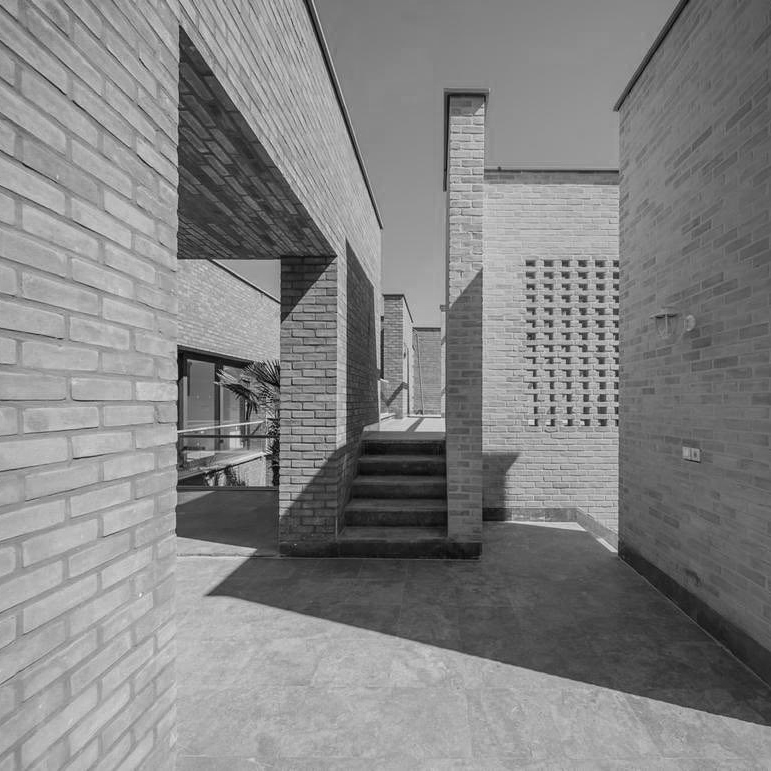
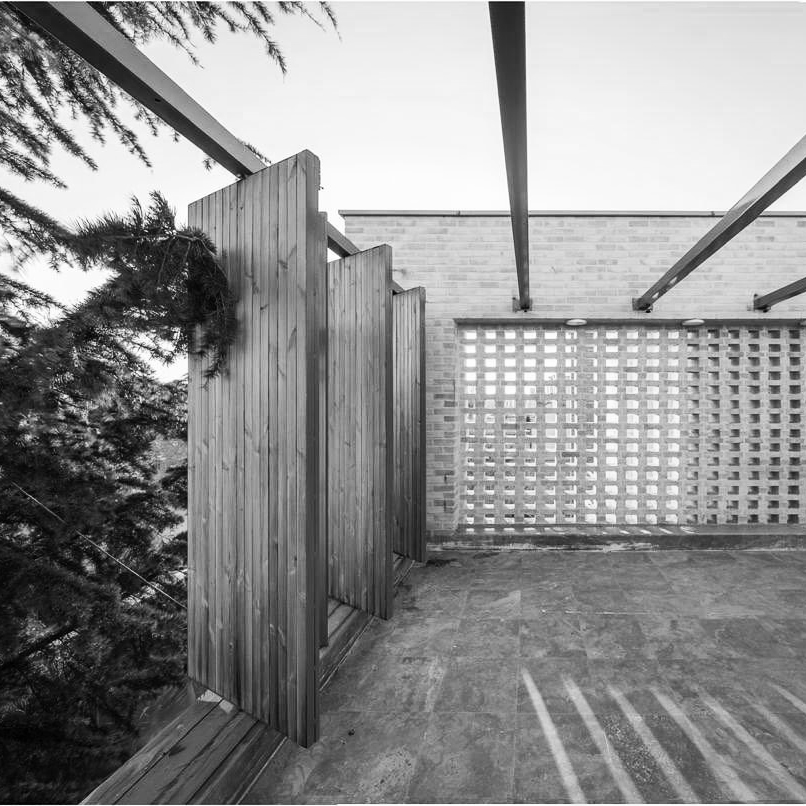
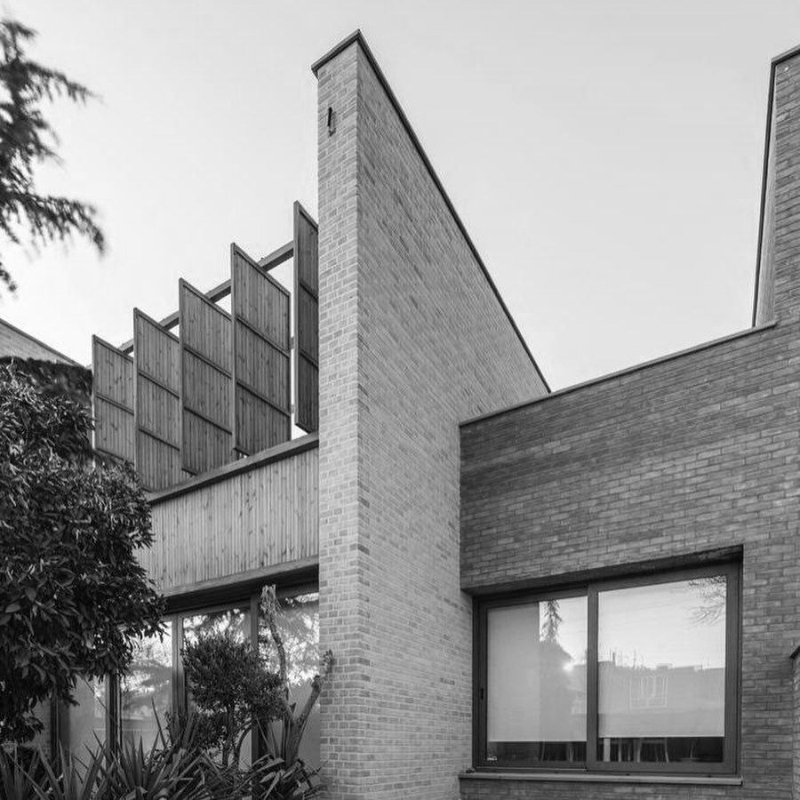
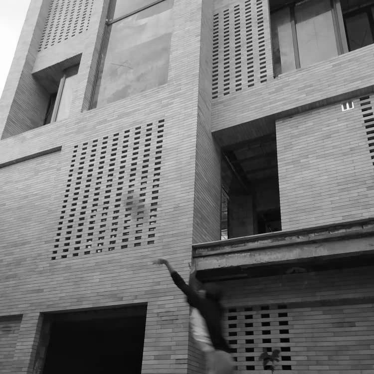
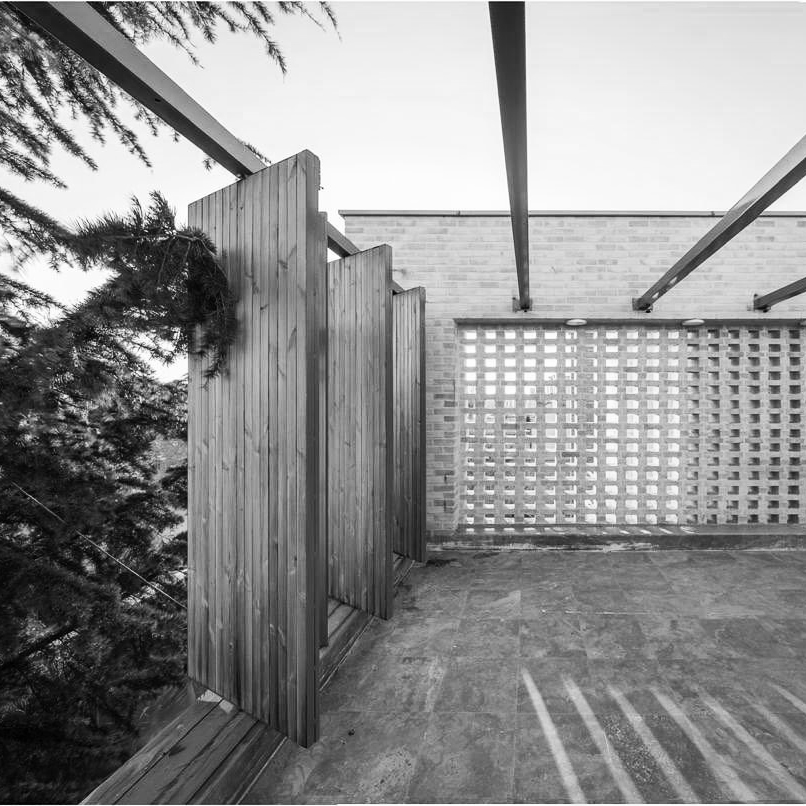
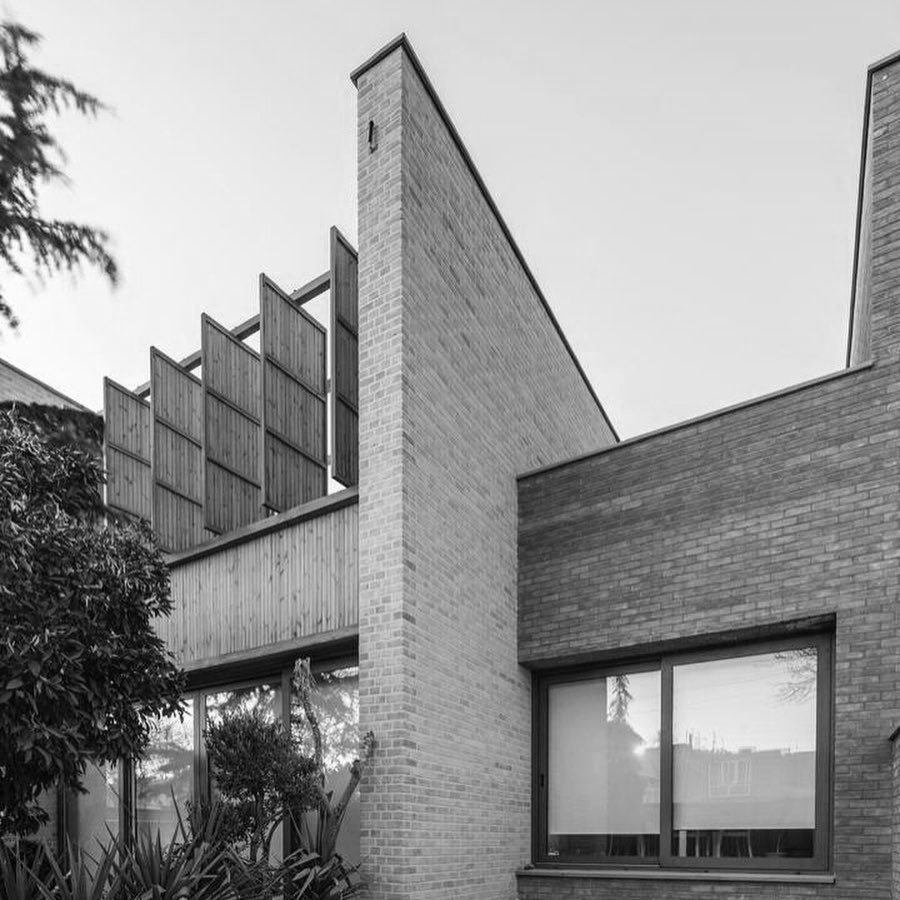
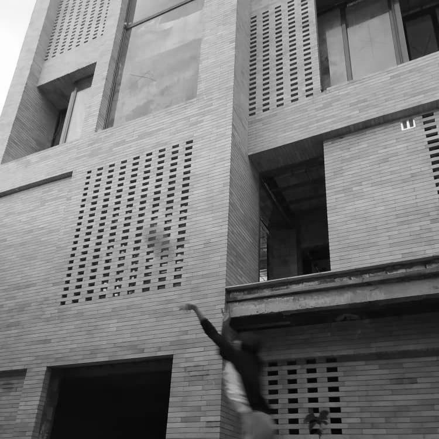

Shahid Beheshti University, Tehran, Iran
Master's dissertation: the Right to the City; A Rethinking of the Role of Architects in Processes of Improving Informal Settlements
Supervisors: Dr. Seyed Hossein Iradj Moeini, Dr. Pante-a Hakimian
GPA: 17.35/20 = 3.7/4
I got My Bachelor's degree in Architecture from Art University of Isfahan, then I pursued a Master's program in Architecture at Shahid Beheshti University. During the Master's program, I worked on a piece of research as my dissertation project titled "the Right to the City; a Rethinking of the Role of Architects in Processes of Improving Informal Settlements". Following my previous research project, I am currently working as the lead researcher and author on a book project titled "the Role of Architects in Informal Settlements-Claiming the Right to the City". Besides, I am working as a research assistant on a governmental research project at Urban Regeneration Corporation of Iran, and I am collaborating with Tehran Urban Innovation Center (TUIC) as a researcher/designer. As professional experience, I worked as an architectural designer at Ayeneh Office for about two years, where I worked on several housing projects.
Education
M.A. in Architecture
B.A. in Architecture
2016 - 2019
B.A. in Architecture
2011 - 2015
Art University of Isfahan, Isfahan, Iran
Final project: Incremental Interventions in Golshan Neibourhood, Isfahan, Iran
GPA: 18.10/20 = 3.9/4
Final project: Incremental Interventions in Golshan Neibourhood, Isfahan, Iran
GPA: 18.10/20 = 3.9/4
Research Experience
- Working on "َParticipatory Interventions in the Context of Informal Settlements", a governmental research project in collaboration with Urban Regeneration Corporation of Iran
Oct. 2020 – Present - Working on "Urban Micro-objects", a research-based design project in collaboration with Tehran Urban Innovation Center (TUIC)
Sep. 2020 – Present - Working as the lead researcher/author on "The Role of Architects in Informal Settlements-Claiming the Right to the City", a book project for Springer's Urban Book Series, in collaboration with Dr. Seyed Hossein Iradj Moeini
2019 – Present - Worked on "the Right to the City; A Rethinking of the Role of Architects in Processes of Improving Informal Settlements", personal master's dissertation project supervised by Dr. Seyed Hossein Iradj Moeini, Pante-a Hakimian
2018-2019 - Worked on "Crime Prevention and the Built Environment; an Approach to create safe environment through Using SpaceSyntax Analysis", a personal research project
2017Research Interests
- Social Equity and Architectural Practice
- Community Engagement and Architectural Practice
- Urban Occupuncture
- Tactical Urbanism
- Henri Lefebvre's Theory of Space
Publications
- The Role of Architects in Informal Settlements- Claiming the Right to the City, Springer (under preparation)
- Design Studio I, assisted Dr. Azadeh Khaki Ghasr
2016-2017
- Architectural Drawing
- Architectural Presentation Methods
- Design Studio III, assisted Dr. Armin Bahramian
- Recieved a research position in Urban Regenaration Corporation of Iran
2020
- Recieved a research position in Tehran Urban Innovation Center (TUIC)
2020
- Recieved positive feedback of reviewers in master's degree dissertation defense
2019
- Awarded the honorary mention in Design for Kids architectural design competition
2017
- Ranked within the top 0.1 percent in Iranian University Entrance Exam for Master's Degree in Architecture, Ranked 25 among approximately 20,000
2016
- Top 10 percent during Bachelor studies
2015
- Studying Cities: Social Science Methods for Urban Research by Erasmus University Rotterdam on Coursera
- The City and You: Find Your Best Place by University of Toronto on Coursera
- Cities Are Back in Town: Urban Sociology for a Globalizing Urban World by Sciences Po on Coursera
- Introduction to GIS Mapping by University of Torronto on Coursera
- Language Proficiency TOEFL IBT Overal Score: 100 R: 28 L: 26 S: 23 W: 23
- Architectural Softwares Rhino Sketchup Revit 3Ds Max Archicad Autocad V-ray Twinmotion
- Research Tools Citavi Mendeli
- Graphic Tools Adobe Illustrator Adobe Photoshop Adobe Indesign
Teaching Experiences
Teaching Assistant, Shahid Beheshti University, Tehran, Iran.Instructor, Architecture Specialized Academy2016-2017Teaching Assistant, Art University of Isfahan2016Honors and Awards
Work Experience
2018-2019Architectural designer, Ayeneh Office, Tehran, Iran 
Courses
Skills